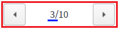

PageControl의 총 페이지수를 설정하는 함수 'setCount'의 예시입니다.
PageControl의 총 페이지수를 설정하기
STEP 1. 초기 상태를 확인합니다.
PageControl의 총 페이지 수는 10으로 정의되어 있고, 현재 페이지는 3이 설정된 상태입니다.
그림 1.브라우저(Chrome) 실행 예시

STEP 2. PageControl의 총 페이지 수를 8으로 설정합니다.
버튼 총 페이지 수를 8로 설정하기를 클릭합니다.STEP 3. 실행된 결과를 확인합니다.
그림 2.브라우저(Chrome) 실행 예시
STEP 4. PageControl의 총 페이지 수를 5으로 설정합니다.
버튼 총 페이지 수를 5로 설정하기를 클릭합니다.STEP 5. 실행된 결과를 확인합니다.
그림 3.브라우저(Chrome) 실행 예시
PageControl의 함수 'setCount'를 이용하여 스크립트를 작성합니다. 세부 지정은 아래의 스크립트 예시에 작성되어 있습니다.
스크립트
//예제 파일에서는 스크립트 scwin.btn_exam1_1_onclick, scwin.btn_exam1_2_onclick에 작성되어 있습니다. // PageControl 'pgc_exam'의 총 페이지 수를 8로 설정합니다. pgc_exam.setCount(8);
setCount( count )
[웹스퀘어5 SP5 개발 가이드] PageControl
링크 : https://docs1.inswave.com/sp5_user_guide/571f1c72bb8f77e6#faab938ce588cd12